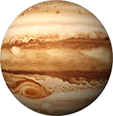
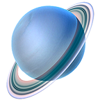

| Earth | |
|---|---|
| Mass (kg) | 5.98 x 1024 |
| Diameter (km) | 12756 |
| Mean density (kg/m 3) | 5520 |
| Escape velocity (m/s) | 11200 |
| Average distance from Sun | 1 AU (149,597,890 km) |
| Rotation period (length of day in Earth days) | 1 (23.93 hours) |
| Revolution period (length of year in Earth days) | 365.26 |
| Mars | |
| Mass (kg) | 6.42 x 10 23 |
| Diameter (km) | 6787 |
| Mean density (kg/m 3) | 3940 |
| Escape velocity (m/s) | 5000 |
| Average distance from Sun | 1.524 AU (227,936,640 km) |
| Rotation period (length of day in Earth days) | 1 (23.93 hours) |
| Revolution period (length of year in Earth days) | 686.98 |
| Jupiter |  |
| Mass (kg) | 1.90 x 10 27 |
| Diameter (km) | 142,800 |
| Mean density (kg/m 3) | 1314 |
| Escape velocity (m/s) | 59500 |
| Average distance from Sun | 5.203 AU (778,412,020 km) |
| Rotation period (length of day in Earth days) | 0.41 (9.8 Earth hours) |
| Revolution period (length of year in Earth days) | 11.86 |
| Uranus |  |
| Mass (kg) | 8.68 x 10 25 |
| Diameter (km) | 51118 |
| Mean density (kg/m 3) | 1290 |
| Escape velocity (m/s) | 21300 |
| Average distance from Sun | 19.19 AU (2,870,972,200 km) |
| Rotation period (length of day in Earth days) | 0.72 (17.9 Earth hours)(retrograde) |
| Revolution period (length of year in Earth days) | 30,685 (84 Earth years) |